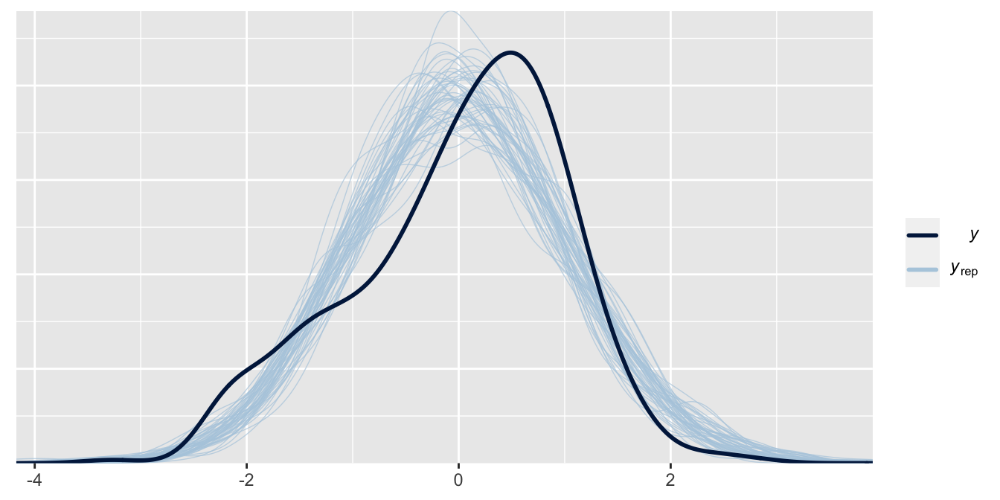
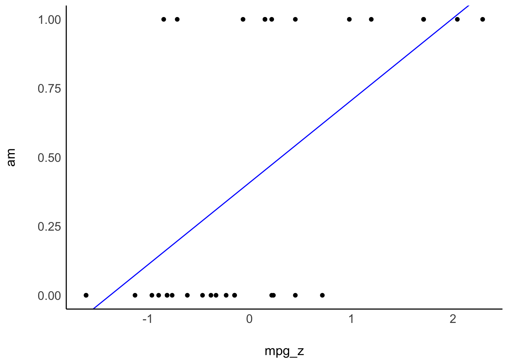

10 Fallbeispiele
10.1 Lernsteuerung
10.1.1 Position im Modulverlauf
Abbildung 1.1 gibt einen Überblick zum aktuellen Standort im Modulverlauf.
10.1.2 Lernziele
Nach Absolvieren des jeweiligen Kapitels sollen folgende Lernziele erreicht sein.
Sie können…
- typische, deskriptive Forschungsfragen spezifizieren als Regression
- Forschungsfragen in Regressionsterme übersetzen
- typische Forschungsfragen auswerten
10.1.3 Begleitliteratur
Der Stoff dieses Kapitels orientiert sich an McElreath (2020), Kap. 4.4 sowie Gelman et al. (2021), Kap. 7 und 10.
10.1.4 Vorbereitung im Eigenstudium
10.1.5 R-Pakete
In diesem Kapitel werden folgende R-Pakete benötigt:
10.1.6 Benötigte Daten
Wir benötigen in diesem Kapitel folgende Datensätze: kidiq, penguins.
10.1.6.1 kidiq
Den Datensatz kidiq importieren Sie am einfachsten aus dem R-Paket rstanarm, das Sie schon installiert haben.
data("kidiq", package = "rstanarm")Alternativ können Sie die Daten hier herunterladen.
10.1.6.2 penguins
Sie können den Datensatz penguins entweder via dem Pfad importieren:
penguins_url <- "https://vincentarelbundock.github.io/Rdatasets/csv/palmerpenguins/penguins.csv"
penguins <- read.csv(penguins_url)Oder via dem zugehörigen R-Paket:
data("penguins", package = "palmerpenguins")Beide Möglichkeit sind okay.
10.1.7 Einstieg
Beispiel 10.1 (Was waren noch mal die Skalenniveaus?) Um Forschungsfragen zu klassifizieren, müssen Sie wissen, was die Skalenniveaus der beteiligten AV und der UV(s) sind.1 \(\square\)
Beispiel 10.2 (Was war noch einmal die Interaktion?) Erkären Sie die Grundkonzepte der Interaktion (hier synonym: Moderation) im Rahmen einer Regressionsanalyse!2 \(\square\)
10.1.8 Überblick
Wenn Sie die Skalenniveaus wissen, können Sie die Forschungsfrage korrekt auswerten, also das korrekte (Regressions-)Modell spezifizieren. Wir werden hier viele der typischen Forschungsfragen (aus psychologischen und ähnlichen Fragestellungen) mit Hilfe von Regressionsmodellen beantworten. Das hat den Vorteil, dass sie nicht viele verschiedene Auswertungsmethoden (t-Test, Varianzanalyse, …) lernen müssen. Außerdem ist die Regressionsanalyse (für viele Situationen) die beste Heransgehensweise, da sie viele Möglichkeiten für Erweiterungen bietet. Entsperchend ist das Thema dieses Kapitels gängige Forschungsfragen mit Hilfe der Regressionsanalyse zu untersuchen. Wenn Sie die Grundkonzepte der Regression schon kennen, wird Ihnen vieles sehr bekannt vorkommen. Natürlich würzen wir das Ganze mit einer ordentlichen Portion Post-Verteilungen aus der Bayes-Küche. Allerdings kommt auch dabei nichts Wesentliches mehr hinzu, abgesehen von einer paar Erweiterungen.
10.2 Arten von Forschungsfragen
10.2.1 Nach dem Erkenntnisziel
📄 Deskriptiv (beschreibend)
- Wie stark ist der (lineare) Zusammenhang \(r\) von Größe und Gewicht?
- Wie stark ist der (lineare) Zusammenhang \(b\) von Lernzeit und Note?
- Bevorzugen unsere Kunden Webshop A oder B?
🔮 Prädiktiv (prognostisch, vorhersagend)
- Wie schwer ist ein deutscher Mann der Größe 1,80m im Schnitt?
- Welche Note kann man erwarten, wenn man nichts für die Klausur lernt?
- Wie viel wird ein Kunde ausgeben, wenn er sich in dieser Variante des Webshops aufhält?
🔗 Präskriptiv (erklärend, kausal)
- Ist Größe eine Ursache von Gewicht (bei deutschen Männern)?
- Wenn ich 100 Stunden lerne, welche Note schreibe ich dann?
- Hat die Art des Webshops einen Einfluss auf unseren Umsatz?
Das Erkenntnisziel wissenschaftlicher Studien ist zumeist erklärend. Anhand der verwendeten statistischen Methode (z. B. Regressionsanalyse) kann man nicht feststellen, zu welchem Erkenntnisziel die Studie gehört.
10.2.2 Nach dem Skalenniveau
Wir konzentrieren uns im Folgenden auf Forschungsfragen auf Basis von Regressionsmodellen mit metrischer AV. Andere Skalenniveaus bei der AV klammern wir aus.
Für die UV(s) sind nominale und metrische Skalenniveaus erlaubt. Modelle mit mehreren UV (und mehreren Stufen an UV) sind erlaubt.
10.2.3 Varianten von Forschungsfragen
Im Folgenden sind beispielhafte, häufig verwendete Arten von Forschungsfragen aufgeführt. Für jede Variante ist ein Beispiel, die Modellformel, der Kausalgraph3, die Forschungsfrage sowie die Grundlagen der Auswertung dargestellt.
Dabei wird folgende Nomenklatur verwendet, um die Skalenmniveaus der beteiligten Variablen einer Forschungsfrage zu benennen:
-
y: metrische abhängige Variable -
g: Gruppierungsvariable; nominal skalierter unabhängige Variable (querschnittlich) -
b: binäre Variable -
x: metrische unabhängige Variable -
u: ungemessene Variable
10.3 y ~ b
10.3.1 Forschungsfrage
Hintergrund:
Eine Psychologin, die im öffentlichen Dienst als Schulpsychologin arbeitet, versucht herauszufinden, warum einige Kinder intelligenter sind als andere. Dazu wurden in einer aufwändigen Studie die Intelligenz vieler Kinder gemessen. Zusätzliche wurden verschiedene Korrelate der Intelligenz erhoben, in der Hoffnung, “Risikofaktoren” für geringere Intelligenz zu entdecken.
Forschungsfrage:
Unterscheidet sich der mittlere IQ-Wert (
kid_score) von Kindern in Abhängigkeit davon, ob ihre jeweilige Mutter über einen Schlusabschluss (mom_hs, \(x=1\)) verfügt (bzw. nicht, \(x=0\))? (ceteris paribus)4.
Die Modellformel zur Forschungsfrage lautet: y ~ b bzw. kid_iq ~ mom_hs.
Formaler ausgedrückt und als Behauptung (Hypothese) formuliert, sieht die Forschungsfrage so aus (Gleichung 10.1):
\[\mu_{x=1|\alpha, \beta, \sigma} \ne \mu_{x=0|\alpha, \beta, \sigma} \tag{10.1}\]
Die Modellformel zur Forschungsfrage lautet: y ~ b bzw. kid_iq ~ mom_hs.
Der Kausalgraph zur Modellformel sieht aus in Abbildung 10.1 dargestellt. Y hat, laut unserem Modell, drei Ursachen:
- b
- x
- u, das steht für “unbekannt”5
kid_iq ~ mom_hs
10.3.2 IQ von Kindern, binärer Prädiktor
Mit parameters(m10.1) bekommt man die Parameter des Modells, s. Tabelle 10.1.
| Parameter | Median | 95% CI | pd | Rhat | ESS | Prior |
|---|---|---|---|---|---|---|
| (Intercept) | 77.56 | (73.28, 81.64) | 100% | 1.001 | 3917.00 | Normal (86.80 +- 51.03) |
| mom_hs | 11.80 | (7.18, 16.48) | 100% | 1.001 | 3789.00 | Normal (0.00 +- 124.21) |
In Abbildung 10.2 ist der Unterschied im IQ der Kinder als Funktion des Schlussabschlusses der Mutter dargestellt.
10.3.3 Interpretation von m10.1
m10.1: kid_score = 78 + 12*mom_hs + error
Der Achsensabschnitt (intercept, \(\beta_0\) oder auch mit \(\alpha\) bezeichnet) ist der mittlere (bzw. vorhergesagte) IQ-Wert von Kindern, deren Mütter über keinen Schulabschluss (mom_hs = 0) verfügen:
kid_score = 78 + 0*12 + error
Das Regressionsgewicht (slope, \(\beta_1\), \(\beta\)) ist der Unterschied im IQ-Wert von Kindern mit Mütter mit Schlulabschluss (im Vergleich zum IQ-Wert von Kindern mit Mütter ohne Schlusabschluss). Dieser Unterschied entspricht der Steigung der Regressionsgeraden.
kid_score = 78 + 1*12 + error = 90 + error
Der Wert von error zeigt, wie genau die Schätzung (Vorhersage) ist bzw. wie stark Prädiktor (UV) und Kriterium (AV) zusammenhängen.
error entspricht dem Vorhersagefehler, also dem Unterschied vom tatsächlichen IQ-Wert des Kindes (\(y\)) zum vom Modell vorhergesagten Wert (\(\hat{y}\)).
10.3.4 m10.1 als Mittelwertsdifferenz
- UV: binär (zweistufig nominal/kategorial)
- AV: metrisch (quantitativ)
👨🏫 Hey R-Golem! Nimm den Datensatz
kidiq, gruppiere nachmom_hsund fasse zusammen anhand des Mittelwerts. Die resultierende Zahl soll heißenkid_score_avg. An die Arbeit!
🤖 Loving it!
10.3.5 Rope
Prüfen wir, ob der Effekt der UV “praktisch Null” ist; dazu nutzen wir das ROPE-Verfahren.
rope(m10.1)Das Ergebnis zeigt uns, dass es 0% Überlappung vom Rope und dem 95%-HDI (der Posterior-Verteilung) gibt.
Fazit: Wir verwerfen die Praktisch-Null-Hypothese. Adios! Abbildung 10.3 visualisiert die Erstreckung der Posteriori-Verteilung (und des 95%-HDI) sowie des Rope.
10.3.6 t-Test
In der frequentistischen Statistik (die mehrheitlich unterricht wird) untersucht man diese Datensituation - Mittelwertsdifferenz zwischen zwei Gruppen - mit einem t-Test.
Der t-Test ist ein inferenzstatistisches Verfahren, das prüft, ob die Mittelwertsdifferenz (in der Population) \(\mu_d\) Null ist: \(\mu_d = 0\).6 In der Bayes-Statistik betrachtet man dazu stattdessen z. B. die Posteriori-Verteilung (z. B. mit 95%PI).
Alternativ zum t-Test kann man - unabhängig, ob man Frequentistisch oder Bayesianisch unterwegs ist - mit einer Regression vom Typ y ~ b das gleiche Ergebnis erreichen.7
10.3.7 Antwort auf die Forschungsfrage, m10.1
Betrachten wir die Ergebnisse von m10.1.
Hier sind die ersten paar Zeilen, s. Tabelle 10.2.
| Stichprobe aus der Post-Verteilung | ||
|---|---|---|
| Achsenabschnitt | momhs | sigma |
| 77.8 | 11.6 | 20.3 |
| 79.4 | 8.2 | 19.5 |
| 71.7 | 18.5 | 20.3 |
| 79.5 | 9.7 | 20.7 |
| 79.7 | 10.1 | 19.2 |
Berechnen wir ein 95%-PI von Hand:8
Mit 95% Wahrscheinlichkeit liegt der Unterschied im mittleren IQ-Wert zwischen Kindern von Müttern mit bzw. ohne Schulabschluss im Bereich von 7 bis 14 IQ-Punkten, laut unserem Modell: \(95\%PI: [7,16]\). Die Hypothese, dass es keinen Unterschied oder einen Unterschied in die andere Richtung geben sollte, ist vor diesem Hintergrund als unwahrscheinlich abzulehnen.
Visualisieren wir abschließend die Posteriori-Verteilung, s. Abbildung 10.4.
plot(eti(m10.1))Zur Einnerung: Korrelation ungleich Kausation. Von einem “Effekt” zu sprechen, lässt in den meisten Köpfen wohl die Assoziation zu einem kausalen Effekt entstehen. Ein Kausaleffekt ist eine starke (und sehr interessante und wichtige) Behauptung, die mehr Fundierung bedarf als eine einfache Korrelation bzw. ein einfacher Zusammenhang.
10.3.8 Vertiefung: Toleranzbereich
🏎️VERTIEFUNG, nicht prüfungsrelevant🏎️
Berechnet man ein Regressionsmodell mit stan_glm (🤖😁), dann zieht man dabei Zufallszahlen 🎲. Der Hintergrund ist, dass Stan eine Stichproben-Post-Verteilung erstellt, und das Ziehen der Stichproben erfolgt zufällig. Das erklärt, warum Ihre Ergebnisse einer Regressionsanalyse mittels stan_glm von denen in diesem Buch abweichen können.
Um zu prüfen, ob Ihre Ergebnisse “ähnlich genug” oder “innerhalb eines Toleranzbereichs” sind, kann man die Funktion is_in_tolerance() aus dem R-Paket prada nutzen.
Die Größe des relativen Toleranzbereichs ist in is_in_toleranzce() auf 5% festgelegt. Das heißt, ein Unterschied von 5% zwischen einem Referenzwert (dem “wahren” Wert) und Ihrem Wert ist okay, also im Toleranzbereich. Außerdem gibt es noch einen absoluten Toleranzbereich, der auf 5% der SD der AV festgelegt ist (bei Regressionsmodellen). Der größere der beiden Werte gilt. \(\square\)
Wenn Sie diese Funktion nutzen wollen, müssen Sie zunächst das Paket installieren (von Github, nicht vom Standard-R-App-Store CRAN), das geht z. B. so:
library(remotes) # dieses Paket können Sie mit `install.packages("remotes") installieren
install_github("sebastiansauer/prada")Dann starten Sie es wie gewohnt:
library(prada)Dann testen Sie, ob Ihr Modellparameter, z. B. \(\beta_1\) innerhalb eines Toleranzbereichs liegt.
Sagen wir der “richtige” oder “wahre” Wert (oder schlicht der Wert einer Musterlösung) für \(\beta_0\) ist 77. Unser Wert sei 77.56. Liegt dieser Wert noch innerhalb eines Toleranzbereichs?
is_in_tolerance(asis = 77.56, # Ihr Wert
tobe = 77, # Referenzwert
tol_rel = .05, # relative Toleranz
tol_abs = .05 * sd(kidiq$kid_score) # absolute Toleranz
)
## [1] TRUEJa, unser Wert ist innerhalb des Toleranzbereichs. ✅
10.4 y ~ x + b
10.4.1 Forschungsfrage
Wie stark ist der statistische Effekt von jeweils Schulabschluss der Mutter (
mom_hs) und IQ der Mutter (mom_iq) auf den IQ des Kindes (kid_score) ?
Die Modellformel zur Forschungsfrage lautet: y ~ x + b bzw. kid_score ~ mom_iq + mom_hs.
Der Kausalgraph9 zur Modellformel sieht aus in Abbildung 10.5 dargestellt. Laut unserem Modell ist y also eine Funktion zweier (kausaler) Einflüsse, b und u, wobei u für “unbekannt” steht, also für alle sonstigen Einflüsse.10
y ~ b
Deskriptive Statistiken zum Datensatz sind in Tabelle Tabelle 10.3 dargestellt.
data("kidiq") # Paket rstanarm, alternativ über CSV einlesen
describe_distribution(kidiq)| Variable | Mean | SD | IQR | Range | Skewness | Kurtosis | n | n_Missing |
|---|---|---|---|---|---|---|---|---|
| kid_score | 86.80 | 20.41 | 28.00 | (20.00, 144.00) | -0.46 | -0.16 | 434 | 0 |
| mom_hs | 0.79 | 0.41 | 0.00 | (0.00, 1.00) | -1.40 | -0.05 | 434 | 0 |
| mom_iq | 100.00 | 15.00 | 21.67 | (71.04, 138.89) | 0.47 | -0.57 | 434 | 0 |
| mom_age | 22.79 | 2.70 | 4.00 | (17.00, 29.00) | 0.18 | -0.63 | 434 | 0 |
10.4.2 1 metrischer Prädiktor
Berechnen wir folgendes Modell: kid_score ~ mom_iq (m10.2), s. Tab. Tabelle 10.4.
| Parameter | Median | 95% CI | pd | Rhat | ESS | Prior |
|---|---|---|---|---|---|---|
| (Intercept) | 25.78 | (14.04, 36.99) | 100% | 1.000 | 3518.00 | Normal (86.80 +- 51.03) |
| mom_iq | 0.61 | (0.50, 0.73) | 100% | 1.000 | 3486.00 | Normal (0.00 +- 3.40) |
kid_score = 26 + 0.6 * mom_iq + error
Visualisieren wir uns noch das Modell m10.2, s. Abbildung 10.6.
kidiq %>%
ggplot(aes(x = mom_iq, y = kid_score)) +
geom_point(alpha = .7) +
geom_abline(slope = coef(m10.2)[2],
intercept = coef(m10.2)[1],
color = "blue")Alternativ kann man sich - einfacher - das Modell (m10.2) so visualisieren, mit Hilfe des R-Pakets easystats, s. Abbildung 10.7.
plot(estimate_expectation(m10.2))Die Linie zeigt die vorhergesagten IQ-Werte der Kinder für verschiedene IQ-Werte der Mütter. Vergleicht man Teilpopulationen von Müttern mit mittleren Unterschied von einem IQ-Punkt, so findet man 0.6 IQ-Punkte Unterschied bei ihren Kindern im Durchschnitt, laut dem Modell m10.2. Der Achsenabschnitt hilft uns nicht weiter, da es keine Menschen mit einem IQ von 0 gibt.
10.4.3 Beide Prädiktoren, m10.3
Berechnen wir als nächstes ein Modell mit beiden Prädiktoren: kid_score ~ mom_hs + mom_iq, s. Tabelle 10.5.
m10.3 <-
stan_glm(
kid_score ~ mom_iq + mom_hs,
refresh = 0,
seed = 42,
data = kidiq)| Parameter | Median | 95% CI | pd | Rhat | ESS | Prior |
|---|---|---|---|---|---|---|
| (Intercept) | 25.74 | (13.87, 36.76) | 100% | 1.001 | 3961.00 | Normal (86.80 +- 51.03) |
| mom_iq | 0.57 | (0.45, 0.69) | 100% | 1.001 | 3456.00 | Normal (0.00 +- 3.40) |
| mom_hs | 6.04 | (1.62, 10.15) | 99.60% | 0.999 | 3616.00 | Normal (0.00 +- 124.21) |
Will man nur schnell die Koeffizienten des Modells (d.h. Punktschätzer der Modellparametern, in diesem Fall den Median) wissen, so kann man anstelle von parameters(mein_modell) auch coef(mein_modell) schreiben:
coef(m10.3)
## (Intercept) mom_iq mom_hs
## 25.7447712 0.5654851 6.0376396m10.3: kid_score = 26 + 0.6*mom_iq + 6*mom_hs + error
Möchte man nur z. B. den 3. Wert aus diesem Vektor, so kann man schreiben:
coef(m10.3)[3]
## mom_hs
## 6.03764Aber natürlich ist es möglich (und einfacher) anstelle von coef den Befehl parameters zu verwenden.
Und die Visualisierung des Modells m10.3, s. Abbildung 10.8.
kidiq2 <-
kidiq %>%
mutate(mom_hs = as.factor(mom_hs))
m10.3a <-
stan_glm(
kid_score ~ mom_iq + mom_hs,
refresh = 0,
seed = 42,
data = kidiq2)
plot(estimate_expectation(m10.3a))- Achsenabschnitt: Hat das Kind eine Mutter mit einem IQ von 0 und ohne Schulabschluss, dann schätzt das Modell den IQ-Wert des Kindes auf 26.
- Koeffizient zum mütterlichen Schulabschluss: Vergleicht man Kinder von Müttern gleicher Intelligenz, aber mit Unterschied im Schulabschluss, so sagt das Modell einen Unterschied von 6 Punkten im IQ voraus.
- Koeffizient zur mütterlichen IQ: Vergleicht man Kinder von Müttern mit gleichem Wert im Schulabschluss, aber mit 1 IQ-Punkt Unterschied, so sagt das Modell einen Unterschied von 0.6 IQ-Punkten bei den Kindern voraus.
10.5 y ~ x + b + x:b
10.5.1 Interaktion zur Modellformel hinzufügen
In m10.3 hat das Modell die Regressionsgeraden gezwungen, parallel zu sein. Betrachtet man das Streudiagramm, so sieht man, das nicht-parallele Geraden besser passen. Sind die Regressionsgeraden nicht parallel, so spricht man von einer Interaktion (synonym: Interaktionseffekt, Moderation).
Liegt eine Interaktion vor, so unterscheidet sich die Steigung der Geraden in den Gruppen. Liegt keine Interaktion vor, so sind die Geraden parallel.\(\square\)
Wir berechnen mit m10.4 das Modell mit folgender Modellformel: kid_score ~ mom_hs + mom_iq + mom_hs:mom_iq, s. Listing 10.1, Abbildung 10.9 und Tabelle 10.6.
m10.4 <-
stan_glm(kid_score ~ mom_iq + mom_hs + mom_hs:mom_iq,
seed = 42,
data = kidiq,
refresh = 0)| Parameter | Median | 95% CI | pd | Rhat | ESS | Prior |
|---|---|---|---|---|---|---|
| (Intercept) | -10.19 | (-36.59, 15.78) | 77.03% | 1.001 | 1370.00 | Normal (86.80 +- 51.03) |
| mom_iq | 0.96 | (0.68, 1.24) | 100% | 1.001 | 1396.00 | Normal (0.00 +- 3.40) |
| mom_hs | 49.92 | (20.72, 79.99) | 100% | 1.001 | 1337.00 | Normal (0.00 +- 124.21) |
| mom_iq:mom_hs | -0.47 | (-0.79, -0.16) | 99.85% | 1.001 | 1340.00 | Normal (0.00 +- 1.16) |
Mit estimate_expectation(m10.4) |> plot() kann man es sich visualisieren, s. Abbildung 10.9.
Die Modellformel zur Forschungsfrage lautet: y ~ x + b + x:b.
Der DAG zur Modellformel sieht aus in Abbildung 10.10 dargestellt.
y ~ x + b + x:b
10.5.2 Interpretation von m10.4
Achsenabschnitt: IQ-Schätzwerte für Kinder mit Mütter ohne Abschluss und mit einem IQ von 0. Kaum zu interpretieren. - mom_hs: Unterschied der IQ-Schätzwerte zwischen Kindern mit Mutter ohne bzw. mit Schulabschluss und jeweils mit einem IQ von 0. Puh. mom_iq: Unterschied der IQ-Schätzwerte zwischen Kindern mit Müttern, die sich um einen IQ-Punkt unterscheiden aber jeweils ohne Schulabschluss. Interaktion: Der Unterschied in den Steigungen der Regressiongeraden, also der Unterschied des Koeffizienten für mom_iq zwischen Mütter mit bzw. ohne Schulabschluss.
Für beide Gruppen, mom_hs=0 und mom_hs=1 gilt folgende Regressionsformel, s. Gleichung 10.2.
\[\text{kid score} = \text{intercept} + \beta_1 \cdot \text{mom hs} + \beta_2 \cdot \text{mom iq} + \beta_3 \cdot \text{mom hs} \cdot \text{mom iq} \tag{10.2}\]
Auf Errisch schreibt mit Gleichung 10.2 so (s. Listing 10.1):
kid_score ~ mom_iq + mom_hs + mom_hs:mom_iq
Trägt man die Werte der Koeffizienten (\(\beta_0, \beta_1, \beta_2, \beta_3\)) ein, so erhält man Gleichung 10.3.
\[\text{kid score} = -10 + 50\cdot \text{mom hs} + 1.1 \cdot \text{mom iq} + (-0.5) \cdot \text{mom hs} \cdot \text{mom iq} \tag{10.3}\]
\(\beta_3\) gibt den Interaktionseffekt an.
Teilen wir die Regressionsformel einmal auf die beiden Gruppen (mom_hs=0 bzw. mom_hs=1) auf:
mom_hs=0:
kid_score = -10 + 50*0 + 1.1*mom_iq - 0.5*0*mom_iq
= -10 + 1.1*mom_iqmom_hs=1:
kid_score = -10 + 50*1 + 1.0*mom_iq - 0.5*1*mom_iq
= 40 + 0.5*mom_iq10.5.3 Nach der Interpretation von 20 unzentrierten Koeffizienten
10.6 y ~ x_c + b + x_c:b
10.6.1 Zentrieren von Prädiktoren
Unter Zentrieren (to center) versteht man das Bilden der Differenz eines Messwerts zu seinem Mittelwert.11 Zentrierte Werte geben also an, wie weit ein Messwert vom mittleren (typischen) Messwert entfernt ist. Mit zentrierten Werten ist eine Regression einfacher zu interpretieren. Hier zentrieren wir (nur) mom_iq; die zentrierte Variable kennzeichnen wir durch den Suffix _c, also mom_iq_c.
Man könnte auch mom_hs zentrieren, aber für eine einfache Interpretation ist es meist nützlich, nur metrische Prädiktoren zu zentrieren.
| Parameter | Median |
|---|---|
| (Intercept) | 85.31 |
| mom_hs | 2.91 |
| mom_iq_c | 0.97 |
| mom_hs:mom_iq_c | -0.48 |
10.6.2 Interpretation von m10.5
- Der Achsenabschnitt (
Intercept) gibt den geschätzten IQ des Kindes an, wenn man eine Mutter mittlerer Intelligenz und ohne Schulabschluss betrachtet. -
mom_hsgibt den Unterschied im geschätzten IQ des Kindes an, wenn man Mütter mittlerer Intelligenz aber mit bzw. ohne Schlusabschluss vergleicht. -
mom_iq_cgibt den Unterschied im geschätzten IQ des Kindes an, wenn man Mütter ohne Schlusabschluss aber mit einem IQ-Punkt Unterschied vergleicht. -
mom_hs:mom_iq_cgibt den Unterschied in den Koeffizienten fürmom_iq_can zwischen den beiden Grupen vonmom_hs.
m10.5 ist in Abbildung 10.11 dargestellt.
10.6.3 Zentrieren ändert nichts an den Vorhersagen
Betrachten wir die Vorhersagen von m10.4:
Und vergleichen wir mit diesen die Vorhersagen von m10.5:
Wir sehen, die Vorhersagen sind (bis auf Rundungsfehler) identisch.
Auch die Streuungen der vorhergesagten Werte unterscheiden sich nicht (wirklich): \(\sigma_{m10.4}= 18\); \(\sigma_{m10.5}= 18\).
Das Zentrieren ändert auch nicht die Regressionskoeffizienten, da die Streuungen der Prädiktoren nicht verändert wurden.
10.6.4 Perzentilintervalle aus der Posterori-Verteilung
Tabelle 10.7 zeigt die Punktschätzer der Parameter für m10.5 sowie ihre Perzentilintervalle12. Nutzen Sie dafür parameters(m10.5), s. Tabelle 10.7.
| Parameter | Median | 95% CI | pd | Rhat | ESS | Prior |
|---|---|---|---|---|---|---|
| (Intercept) | 85.31 | (80.99, 89.72) | 100% | 1.001 | 2610.00 | Normal (86.80 +- 51.03) |
| mom_hs | 2.91 | (-1.89, 7.69) | 88.00% | 1.001 | 2832.00 | Normal (0.00 +- 124.21) |
| mom_iq_c | 0.97 | (0.67, 1.24) | 100% | 1.002 | 1982.00 | Normal (0.00 +- 3.40) |
| mom_hs:mom_iq_c | -0.48 | (-0.78, -0.16) | 99.78% | 1.002 | 1992.00 | Normal (0.00 +- 3.87) |
Highest Density (Posterior) Intervalle (HDI oder HDPI) kann man sich komfortabel ausgeben lassen mit hdi(m10.5) oder mit parameters(m10.5, ci_method = "hdi"), s. Tabelle 10.8.
parameters(m10.5, ci_method = "hdi") %>%
display()| Parameter | Median | 95% CI | pd | Rhat | ESS | Prior |
|---|---|---|---|---|---|---|
| (Intercept) | 85.31 | (81.26, 89.88) | 100% | 1.001 | 2610.00 | Normal (86.80 +- 51.03) |
| mom_hs | 2.91 | (-1.89, 7.70) | 88.00% | 1.001 | 2832.00 | Normal (0.00 +- 124.21) |
| mom_iq_c | 0.97 | (0.68, 1.24) | 100% | 1.002 | 1982.00 | Normal (0.00 +- 3.40) |
| mom_hs:mom_iq_c | -0.48 | (-0.79, -0.17) | 99.78% | 1.002 | 1992.00 | Normal (0.00 +- 3.87) |
Im Falle symmetrischer Posteriori-Verteilungen (wie hier) kommen beide Arten von Intervallen zu gleichen Ergebnissen.
10.6.5 Beantworten der Forschungsfrage
Das Model zeigt keine Belege, dass sich die mittlere Intelligenz von Kindern bei Müttern mit bzw. ohne Schlusabluss unterscheidet (95%PI: [-2.0, 7.8]). Hingegen fand sich ein Effekt der mütterlichen Intelligenz; pro Punkt Unterschied in müttlerlichem IQ fand sich ein Unterschied von 0.7 bis 1.3 IQ-Punkte (95%PI). Außerdem fand sich ein Beleg, dass der Zusammenhang des IQ zwischen Mutter und Kind durch den Schulabschluss moderiert wird: Bei Mütter mit Schulabschluss war der Zusammenhang zwischen Mutter-IQ und Kind-IQ geringer (95%PI: [-0.80, -0.17]).
Das Modell macht keine kausalen Aussagen. Es werden lediglich Unterschiede bzw. Zusammenhänge beschrieben. Für kausale Aussagen ist mehr nötig, als einen statistischen Zusammenhang festzustellen.
10.7 y ~ g
Hier untersuchen wir ein Modell mit einer nominalen UV mit mehreren Stufen.
10.7.1 Forschungsfrage
Nach Ihrem Studium wurden Sie reich als Unternehmensberater:in; Ihre Kompetenz als Wirtschaftspsychologi war heiß begehrt. Von Statistik wollte niemand etwas wissen… Doch nach einiger Zeit kamen Sie in eine Sinnkrise. Sie warfen Ihre Job hin und beschlossen, in die Wissenschaft zu gehen. Kurz entschlossen bewarben Sie sich auf das erste Stellenangebot als Nachwuchswissenschaftler:in.
Ihr Forschungsprojekt führte Sie in die Antarktis… Nun, das war zumindest ein Gegenentwurf zu Ihrem bisherigen Jet-Set-Leben.
Ihre Aufgabe bestand nun darin, Pinguine zu untersuchen. Genauer gesagt ging es um Größenunterschiede zwischen drei Pinguinarten. Ja, stimmt, an so ein Forschungsprojekt hatten Sie vorher nie auch nur nur im Traum gedacht.
Unterscheiden sich die mittleren Körpergewichte der drei Pinguinarten?
Die allgemeine Modellformel zur Forschungsfrage lautet: y ~ g.
Der DAG zur Modellformel sieht aus in Abbildung 10.12 dargestellt.
y ~ g
10.7.2 Alle Mittelwerte sind gleich, exakt gleich (?)
Formal: \(\mu_1 = \mu_2 = \ldots = \mu_k\) mit \(k\) verschiedenen Gruppen von Pinguinarten.
Hypothesen, die keinen (Null) Unterschied zwischen Gruppen oder keinen Zusammenhang zwischen Variablen postulieren, kann man als Nullhypothesen bezeichnen.
Moment. Dass sich alle Mittelwerte um 0,00000000 unterscheiden, ist wohl nicht zu vermuten. Wer glaubt sowas? 🤔 Daher ist die bessere Forschungsfrage:
Wie sehr unterscheiden sich mittlere Körpergewichte in Abhängigkeit von der Pinguinart?
Alternativ können wir die Hypothese prüfen, ob die Mittelwerte “praktisch” gleich sind, also sich “kaum” unterscheiden. Der Grenzwert für “praktisch gleich” bzw. “kaum unterschiedlich” ist subjektiv. Dazu in Kapitel 9.3 mehr.
10.7.3 Erster Blick in den Datensatz penguins

Datenquelle, Beschreibung des Datensatzes
Hier ist die Verteilung des Gewichts jeder Spezies im Datensatz, Tabelle 10.9.
Was fällt Ihnen auf?
10.7.4 Visualisierung (EDA)
Hier kommen die Pinguine! Wie schwer sind die Tiere in unserer Stichprobe, s. Abbildung 10.13?
10.7.5 Gewicht pro Spezies, m10.6
Berechnen wir das mittlere Gewicht pro Spezies (Gruppe) der Pinguine, s. m10.6 und Tabelle 10.10.
Die Modellformel für m10.6 lautet also body_mass_g ~ species.
options(mc.cores = parallel::detectCores()) # Turbo einschalten
m10.6 <- stan_glm(body_mass_g ~ species,
data = penguins,
refresh = 0, # unterdrückt Ausgabe der Posteriori-Stichproben
seed = 42 # zur Reproduzierbarkeit
)
m10.6 %>% parameters()| Parameter | Median | 95% CI | pd | Rhat | ESS | Prior |
|---|---|---|---|---|---|---|
| (Intercept) | 3699.92 | (3624.56, 3776.46) | 100% | 1.001 | 4194.00 | Normal (4201.75 +- 2004.89) |
| speciesChinstrap | 32.24 | (-100.80, 159.99) | 69.92% | 1.000 | 4266.00 | Normal (0.00 +- 5015.92) |
| speciesGentoo | 1374.94 | (1265.80, 1486.83) | 100% | 1.001 | 4187.00 | Normal (0.00 +- 4171.63) |
10.7.6 Interpretation von m10.6
Die UV hat drei verschiedene Stufen (Werte, Ausprägungen; hier: Spezies), aber es werden in Tabelle 10.10 nur zwei Stufen angezeigt (also eine weniger) zusätzlich zum Achsenabsdhnitt. Die fehlende Stufe (Adelie, nicht ausgegeben) ist die Vergleichs- oder Referenzkategorie (baseline) und ist im Achsenabschnitt ausgedrückt (Intercept). Die Koeffizienten für species geben jeweils den (vorhergesagten) Unterschied zur Vergleichskategorie wieder. Pinguine der Spezies Adelie haben laut Modell ein mittleres Gewicht von ca. 3700g. Pinguine der Spezies Gentoo sind laut Modell im Mittel gut 1000g schwerer als Pinguine der Spezies Adelie, etc.
Der Unterschied im mittleren Gewicht von den Gruppen Chinstrap und Gentoo zur Referenzgruppe (Adelie) ist in Abbildung 10.14 verdeutlicht.
plot(hdi(m10.6)) + scale_fill_okabeito()Das Farbschema nach Okabe und Ito ist gut geeignet, um nominal skalierte Farben zu kodieren (d. Details hier).
10.7.7 Glauben wir jetzt an Gruppeneffekte?
Glauben wir jetzt, auf Basis der Modellparameter, an Unterschiede (hinsichtlich der AV) zwischen den Gruppen (UV)?
Es scheinen sich nicht alle Gruppen voneinander zu unterscheiden. So ist der Mittelwert der Gruppe Gentoo deutlich höher als der der beiden anderen Gruppen. Umgekehrt sind sich die Pinguinarten Adelie und Chinstrap in ihren Mittelwerten ziemlich ähnlich.
Wie in Abbildung 10.14 ersichtlich, überlappt sich der Schätzbereich für den Parameter von Gentoo nicht mit der Null; hingegen überlappt sich der Schätzbereich des Parameters für Chinstrap deutlich mit der Nullinie.
Auf Basis unseres Modells verwerfen wir die also (mit hoher Sicherheit) die Hypothese, dass alle Mittelwerte exakt identisch sind.
Ehrlicherweise hätte sowieso (fast) niemand geglaubt, dass die exakte Nullhypothese \(\mu_1 = \mu_2 = \ldots = \mu_k\) bis in die letzte Dezimale gilt. Anders gesagt: Die Wahrscheinlichkeit eines bestimmten Wertes einer stetigen Zufallsvariable ist praktisch Null. Aber: Viele Forschis prüfen gerne die Nullhypothese, daher diskutieren wir den Begriff der (exakten) Nullhypothese. Das Verfahren der Frequentistischen Statistik, um die Nullhypothese \(\mu_1 = \mu_2 = \ldots = \mu_k\) zu testen, nennt man Varianzanalyse (analysis of variance, kurz ANOVA). In der Bayes-Statistik nutzt man - wie immer - primär die Post-Verteilung, um Fragen der Inferenz (z. B. Gruppenunterschiede dieser Art) inferenzstatistisch zu beurteilen.
10.7.8 Priori-Werte ändern
Unser Modell m10.6 hat schwach informierte (weakly informative) Priors. Für Achsenabschnitt und die Regressionskoeffizienten trifft unser Golem Stan folgende Annahmen in der Voreinstellung:
- Achsenabschnitt und Regressionsgewichte werden als normalverteilt angenommen
- mit Mittelwert entsprechend den Stichprobendaten
- und einer Streuung des Mittelwerts, die der 2.5-fachen der Streuung in der Stichprobe entspricht
- für Sigma wird eine Exponentialverteilung mit Rate \(\lambda=1\) angenommen, skaliert mit der Streuung der AV.
Mehr Infos kann man sich so ausgeben lassen: prior_summary(modell):
prior_summary(m10.6)
## Priors for model 'm10.6'
## ------
## Intercept (after predictors centered)
## Specified prior:
## ~ normal(location = 4202, scale = 2.5)
## Adjusted prior:
## ~ normal(location = 4202, scale = 2005)
##
## Coefficients
## Specified prior:
## ~ normal(location = [0,0], scale = [2.5,2.5])
## Adjusted prior:
## ~ normal(location = [0,0], scale = [5015.92,4171.63])
##
## Auxiliary (sigma)
## Specified prior:
## ~ exponential(rate = 1)
## Adjusted prior:
## ~ exponential(rate = 0.0012)
## ------
## See help('prior_summary.stanreg') for more detailsWo man man über mehr inhaltliches Wissen verfügt, so wird man die Prioris anpassen wollen, z. B.:
m10.6b <- stan_glm(
body_mass_g ~ species,
data = penguins,
refresh = 0,
seed = 42,
prior = normal(location = c(0, 0), # betas, Mittelwert
scale = c(500, 500)), # betas, Streuung
prior_intercept = normal(3000, 500), # Achsenabschnitt, Mittelwert und Streuung
prior_aux = exponential(0.001)
)
coef(m10.6b)
## (Intercept) speciesChinstrap speciesGentoo
## 3706.11372 24.62256 1358.89285Anstelle von Rohwerten (hier Angabe von Gramm Gewicht) kann man die Streuung auch in z-Werten eingeben, das macht es etwas einfacher. Dazu gibt man bei dem oder den entsprechenden Parametern den Zusatz autoscale = TRUE an.
m10.6c <- stan_glm(
body_mass_g ~ species,
data = penguins,
refresh = 0,
seed = 42,
prior = normal(location = c(0, 0), # betas, Mittelwert
scale = c(2.5, 2.5), # betas, Streuung
autoscale = TRUE), # in z-Einheiten
prior_intercept = normal(4200, 2.5, # Achsenabschnitt, Mittelwert und Streuung
autoscale = TRUE),
prior_aux = exponential(1, autoscale = TRUE)
)
coef(m10.6c)
## (Intercept) speciesChinstrap speciesGentoo
## 3702.31547 32.00876 1372.96787Den Parameter für die Streuung des Modells, \(\sigma\), kann man sich mit sigma(modell) ausgeben lassen:
sigma(m10.6b)
## [1] 463.3339Implizit bekommt man die Informationen zu \(\sigma\) mitgeteilt durch die Größe der Konfidenzintervalle.
Übrigens macht es meistens keinen Sinn, extrem weite Prioris zu definieren13.
10.7.9 Wechsel der Referenzkategorie
species ist eine nominale Variable, da passt in R der Typ factor (Faktor) am besten. Aktuell ist der Typ noch character (Text):
Im Standard sortiert R die Faktorstufen alphabetisch, aber man kann die Reihenfolge ändern.
levels(penguins$species)
## [1] "Adelie" "Chinstrap" "Gentoo"Setzen wir Gentoo als Referenzkategorie und lassen die restliche Reihenfolge, wie sie ist:
Beachten Sie, dass dazu das Paket forcats verfügbar sein muss.
Jetzt haben wir die Referenzkategorie geändert:
levels(penguins$species)
## [1] "Gentoo" "Adelie" "Chinstrap"Der Wechsel der Referenzkategorie ändert nichts Wesentliches am Modell, s. Tabelle 10.11.
m10.6a <- stan_glm(body_mass_g ~ species, data = penguins, refresh = 0)
hdi(m10.6a)| Parameter | 95% HDI |
|---|---|
| (Intercept) | [ 4991.97, 5152.93] |
| speciesAdelie | [-1478.87, -1269.68] |
| speciesChinstrap | [-1474.64, -1210.97] |
10.8 y ~ x1 + x2
10.8.1 Forschungsfrage
Stehen sowohl der IQ der Mutter als auch, unabhängig davon, das Alter der Mutter im Zusammenhang mit dem IQ des Kindes?
- Das ist wieder eine deskriptive Forschungsfrage. Keine Kausalwirkung (etwa “IQ der Mutter ist die Ursache zum IQ des Kindes”) wird impliziert.
- Es geht rein darum, Zusammenhänge in den Daten - bzw. in der Population - aufzuzeigen.
- Viele Forschungsfagen gehen allerdings weiter und haben explizit Kausalwirkungen im Fokus. Für solche Fragen ist eine deskriptive Untersuchung nicht geeignet, sondern eine Kausalanalyse ist nötig.
10.8.2 Was heißt, X hängt mit Y zusammen?
- Der Begriff “Zusammenhang” ist nicht exakt.
- Häufig wird er (für metrische Variablen) verstanden als
- lineare Korrelation \(\rho\) bzw. \(r\)
- lineare Regression \(\beta\), bzw. \(b\)
- Der Regressionskoeffizient
- misst die Steigung der Regressionsgerade
- zeigt, wie groß der vorhergesagte Unterschied in Y, wenn man zwei Personen (Beobachtungseinheiten) vergleicht, die sich um eine Einheit in X unterscheiden
- wird manchmal mit dem “Effekt von X auf Y” übersetzt. Vorsicht: “Effekt” klingt nach Kausalzusammenhang. Eine Regression ist keine hinreichende Begründung für einen Kausalzusammenhang.
- Der Korrelationskoeffizient
- misst eine Art der Stärke des linearen Zusammenhangs
- zeigt, wie klein die Vorhersagefehler der zugehörigen Regrssion im Schnitt sind.
- Korrelation ist nicht (automatisch) Kausation.
Es ist hilfreich, sich die Korrelationen zwischen den (metrischen) Variablen zu betrachten, bevor man ein (Regressions-)Modell aufstellt.
kidiq %>%
correlation()| Parameter1 | Parameter2 | r | 95% CI | t(432) | p |
|---|---|---|---|---|---|
| kid_score | mom_hs | 0.24 | (0.15, 0.32) | 5.07 | < .001*** |
| kid_score | mom_iq | 0.45 | (0.37, 0.52) | 10.42 | < .001*** |
| kid_score | mom_age | 0.09 | (-2.15e-03, 0.18) | 1.92 | 0.166 |
| kid_score | mom_iq_c | 0.45 | (0.37, 0.52) | 10.42 | < .001*** |
| mom_hs | mom_iq | 0.28 | (0.19, 0.37) | 6.13 | < .001*** |
| mom_hs | mom_age | 0.21 | (0.12, 0.30) | 4.57 | < .001*** |
| mom_hs | mom_iq_c | 0.28 | (0.19, 0.37) | 6.13 | < .001*** |
| mom_iq | mom_age | 0.09 | (-2.54e-03, 0.18) | 1.91 | 0.166 |
| mom_iq | mom_iq_c | 1.00 | (1.00, 1.00) | 1.39e+09 | < .001*** |
| mom_age | mom_iq_c | 0.09 | (-2.54e-03, 0.18) | 1.91 | 0.166 |
p-value adjustment method: Holm (1979) Observations: 434
Tabelle 10.12 zeigt die Korrelationsmatrix als Korrelationsmatrix:
| Parameter | mom_iq_c | mom_age | mom_iq | mom_hs |
|---|---|---|---|---|
| kid_score | 0.45*** | 0.09 | 0.45*** | 0.24*** |
| mom_hs | 0.28*** | 0.21*** | 0.28*** | |
| mom_iq | 1.00*** | 0.09 | ||
| mom_age | 0.09 |
p-value adjustment method: Holm (1979)
Nützlich ist auch die Visualisierung der Korrelationstabelle als Heatmap, Abbildung 10.15.
10.8.3 Univariate Regressionen
Wir berechnen jeweils eine univariate Regression, pro Prädiktor, also eine für mom_iq und eine für mom_age.
Hier die Ergebnisse für mom_iq:
coef(m10.7)
## (Intercept) mom_iq
## 25.9412175 0.6091687Hier die Ergebnisse für mom_age:
coef(m10.8)
## (Intercept) mom_age
## 71.1211465 0.689380410.8.4 Visualisierung der univariaten Regressionen
In Abbildung 10.16 ist die univariate Regression mit jeweils einem der beiden Prädiktoren dargestellt.
m10.7: Die Steigung beträgt 0.6. m10.8: Die Steigung beträgt 0.7.
Univariate Regressionen
10.8.5 Multiples Modell (beide Prädiktoren), m10.9
m10.9 stellt das multiple Regressionsmodell dar; multipel bedeutet in diesem Fall, dass mehr als ein Prädiktor im Modell aufgenommen ist.
Die Regressionsgewichte unterscheiden sich zu den von den jeweiligen univariaten Regressionen.
- Bei einer multiplen Regression ist ein Regressionsgewicht jeweils “bereinigt” vom Zusammenhang mit dem (oder den) anderen Regressionsgewicht.
- Das bedeutet, man betrachtet den den Zusammenhang eines Prädiktors mit der AV, wobei man gleichzeitig den anderen Prädiktor konstant hält.
coef(m10.9)
## (Intercept) mom_iq mom_age
## 17.6958168 0.6024341 0.393475210.8.6 3D-Visualisierung eines Modells mit zwei Prädiktoren 1
In Abbildung 10.17 ist das Modell m10.9 in 3D dargestellt via Plotly.
10.8.7 Visualisierung mit Farbe statt 3. Dimension
3D-Visualisierungen haben Vorteile, aber auch Nachteile; Abbildung 10.18 zeigt eine alternative Visualisierung, in der die 3. Dimension durch eine Farbschattierung ersetzt ist.
Auf der Achse von mom_iq erkennt man deutlich (anhand der Farbänderung) die Veränderung für die AV (kid_score). Auf der Achse für mom_age sieht man, dass sich die AV kaum ändert, wenn sich mom_age ändert.
10.8.8 Visualisierung in 10 Dimensionen
Abbildung 10.19 visualisiert den Zusammenhang von 10 Variablen untereinander.
Leider macht mein Hirn hier nicht mit. Unsere Schwächen, eine große Zahl an Dimensionen zu visualisieren, ist der Grund, warum wir mathematische Modelle brauchen.
Daher kann man ein Modell verstehen als eine Zusammenfassung eines (ggf. hochdimensionalen) Variablenraums.
10.8.9 Relevanz der Prädiktoren
Woher weiß man, welcher Prädiktor am stärksten mit der AV zusammenhängt? Man könnte auch sagen: Welcher Prädiktor (welche UV) am “wichtigsten” ist oder den “stärksten Einfluss” auf die AV ausübt? Bei solchen kausal konnotierten Ausdrücken muss man vorsichtig sein: Die Regressionsanalyse als solche ist keine Kausalanalyse. Die Regressionsanalyse - wie jede statistische Methoden - kann für sich nur Muster in den Daten, also Zusammenhänge bzw. Unterschiede, entdecken, s. Abbildung 10.20.
Welcher Prädiktor ist nun “wichtiger” oder “stärker” in Bezug auf den Zusammenhang mit der AV, mom_iq oder mom_age (Modell m10.9)?
-
mom_iqhat den größeren Koeffizienten. -
mom_agehat weniger Streuung.
Um die Relevanz der Prädiktoren vergleichen zu können, müsste man vielleicht die Veränderung von kid_score betrachten, wenn man von kleinsten zum größten Prädiktorwert geht. Allerdings sind Extremwerte meist instabil (da sie von einer einzigen Beobachtung bestimmt werden). Sinnvoller ist es daher, die Veränderung in der AV zu betrachten, wenn man den Prädiktor von “unterdurchschnittlich” auf “überdurchschnittlich” ändert. Das kann man mit z-Standardisierung erreichen.
10.8.10 z-Standardisierung
z-Standardisierung bedeutet, eine Variable so zu transformieren, dass sie über einen Mittelwert von 0 und eine SD von 1 verfügt:
\[z = \frac{x - \bar{x}}{sd(x)}\]
Der Nutzen von Standardisieren (dieser Art) ist die bessere Vergleichbarkeit von Variablen, die (zuvor) verschiedene Mittelwerte und Streuungen hatten14. Die Standardisierung ist ähnlich zur Vergabe von Prozenträngen: “Dieser Messwert gehört zu den Top-3-Prozent”. Diese Aussage ist bedeutsam für Variablen mit verschiedenem Mittelwert und Streuung. So werden vergleichende Aussagen für verschiedene Verteilungen möglich.
10.8.11 Statistiken zu den z-transformierten Variablen
Tabelle 10.3 zeigt die Verteilung der (metrischen) Variablen im Datensatz kidiq.
Metrische Variablen in z-Werte zu transformieren, hat verschiedenen Vorteile:
- der Achsenabschnitt ist einfacher zu interpretieren (da er sich dann auf ein Objekt mit mittlerer Ausprägung bezieht)
- Interaktionen sind einfacher zu interpretieren (aus dem gleichen Grund)
- Prioriwerte sind einfacher zu definieren (wieder aus dem gleichen Grund)
- die Effekte verschiedener Prädiktoren sind einfacher in ihrer Größe zu vergleichen, da dann mit gleicher Skalierung/Streuung
- kleine und ähnlich große Wertebereich erleichtern dem Golem die Rechenarbeit
Man kann die z-Transformation (“Skalierung”) mit standardize (aus easystats) durchführen, s. Tabelle 10.13.
kidiq_z <-
standardize(kidiq, append = TRUE) # z-transformiert alle numerischen Werte| kid_score | mom_hs | mom_iq | mom_age | mom_iq_c | pred_m10.9 | kid_score_z | mom_hs_z | mom_iq_z | mom_age_z | mom_iq_c_z | pred_m10.9_z |
|---|---|---|---|---|---|---|---|---|---|---|---|
| 65 | 1 | 121.12 | 27 | 21.12 | 101.28 | -1.07 | 0.52 | 1.41 | 1.56 | 1.41 | 1.56 |
| 98 | 1 | 89.36 | 25 | -10.64 | 81.37 | 0.55 | 0.52 | -0.71 | 0.82 | -0.71 | -0.60 |
| 85 | 1 | 115.44 | 27 | 15.44 | 97.87 | -0.09 | 0.52 | 1.03 | 1.56 | 1.03 | 1.19 |
| 83 | 1 | 99.45 | 25 | -0.55 | 87.44 | -0.19 | 0.52 | -0.04 | 0.82 | -0.04 | 0.06 |
| 115 | 1 | 92.75 | 27 | -7.25 | 84.19 | 1.38 | 0.52 | -0.48 | 1.56 | -0.48 | -0.29 |
| 98 | 0 | 107.90 | 18 | 7.90 | 89.78 | 0.55 | -1.91 | 0.53 | -1.77 | 0.53 | 0.31 |
Der Schalter append = TRUE sorgt dafür, dass die ursprünglichen Variablen beim z-Standardisieren nicht überschrieben werden, sondern angehängt werden (mit einem Suffix _z).
Man kann auch nur einzelne Variablen mit standardize standardisieren, indem man das Argument select nutzt.
Man kann das Standardisieren auch von Hand machen, ohne ein Extra-Paket, s. Tabelle 10.14. Dazu verwendet man den Befehl scale().
10.9 y_c ~ x1_c + x2_c
10.9.1 AV z-transformieren
In diese Abschnitt berechnen wir ein Modell (Modell m10.10), in dem die Prädiktoren z-transformiert sind (standardisiert) und die AV ebenfalls. Das Standardisieren der AV, kid_score ist zwar nicht nötig, um den Effekt der Prädiktoren (UV) auf die AV zu untersuchen. Standardisiert man aber die AV, so liefern die Regressionskoeffizienten (Betas) Aussage darüber, um wie viele SD-Einheiten sich die AV verändert, wenn sich ein Prädiktor um eine SD-Einheit verändert. Das kann auch eine interessante(re) Aussage sein.
- Der Achsenabschnitt gibt den Mittelwert der AV (
kid_score) an, dakid_score_z = 0identisch ist zum Mittelwert vonkid_score. - Der Koeffizient für
mom_iq_zgibt an, um wie viele SD-Einheiten sichkid_score(die AV) ändert, wenn sichmom_iqum eine SD-Einheit ändert. - Der Koeffizient für
mom_age_zgibt an, um wie viele SD-Einheiten sichkid_score(die AV) ändert, wenn sichmom_ageum eine SD-Einheit ändert.
Jetzt sind die Prädiktoren in ihrer Relevanz (Zusammenhang mit der AV) vergleichbar:
- Man sieht, dass die Intelligenz der Mutter deutlich wichtiger ist das Alter der Mutter (im Hinblick auf die Vorhersage bzw. den Zusammenhang mit mit der AV).
10.9.2 95%-PI
Mit parameters können wir uns ein PI für m10.10 ausgeben lassen, s. Abbildung 10.21; im Standard wird ein 95%-ETI berichtet15.
parameters(m10.10) | Parameter | Median | 95% CI | pd | Rhat | ESS | Prior |
|---|---|---|---|---|---|---|
| (Intercept) | 6.50e-04 | (-0.08, 0.09) | 50.52% | 0.999 | 4208.00 | Normal (-2.81e-16 +- 2.50) |
| mom_iq_z | 0.44 | (0.36, 0.53) | 100% | 1.000 | 4372.00 | Normal (0.00 +- 2.50) |
| mom_age_z | 0.05 | (-0.03, 0.14) | 88.33% | 1.000 | 4410.00 | Normal (0.00 +- 2.50) |
plot(eti(m10.10)) + scale_fill_okabeito()10.9.3 Modellgüte
r2(m10.10)
## # Bayesian R2 with Compatibility Interval
##
## Conditional R2: 0.204 (95% CI [0.141, 0.270])Ist dieser Wert von \(R2\) “gut”? Diese Frage ist ähnlich zur Frage “Ist das viel Geld?”; man kann die Frage nur im Kontext beantworten.
Eine einfache Lösung ist immer, Modelle zu vergleichen. Dann kann man angeben, welches Modell die Daten am besten erklärt, z. B. auf Basis von \(R^2\).
Zu beachten ist, dass das Modell theoretisch fundiert sein sollte. Vergleicht man viele Modelle aufs Geratewohl, so muss man von zufällig hohen Werten der Modellgüte im Einzelfall ausgehen.
Wenn Sie aber unbedingt eine “objektive” Antwort auf die Frage “wie viel ist viel?” haben wollen, ziehen wir Herrn Cohen zu Rate, der eine Antwort auf die Frage “Wieviel ist viel?” gegeben hat (Cohen, 1992):
interpret_r2(0.2) # aus `easystats`
## [1] "moderate"
## (Rules: cohen1988)Danke, Herr Cohen!
10.9.4 Priori-Verteilung für m10.10 und Modelldefinition
Stan hat für uns folgende Prioris ausgesucht:
prior_summary(m10.10) # aus rstanarm
## Priors for model 'm10.10'
## ------
## Intercept (after predictors centered)
## ~ normal(location = -2.8e-16, scale = 2.5)
##
## Coefficients
## ~ normal(location = [0,0], scale = [2.5,2.5])
##
## Auxiliary (sigma)
## ~ exponential(rate = 1)
## ------
## See help('prior_summary.stanreg') for more details🤖 Nix zu danken!
Wie gesagt, Stan nimmt dafür einfach die empirischen Mittelwerte und Streuungen her16.
Stans Ausgabe kann man in Mathe-Sprech so darstellen, s. Gleichung 10.4.
\[ \begin{aligned} \text{kidscore} &\sim \mathcal{N}(0,2.5)\\ \mu_i &= \alpha + \beta_1\text{momiq}_i + \beta_2\text{momage}_i \\ \alpha &\sim \mathcal{N}(0,2.5)\\ \beta_1 &\sim \mathcal{N}(0,2.5)\\ \beta_2 &\sim \mathcal{N}(0,2.5)\\ \sigma &\sim \mathcal{E}(1) \end{aligned} \tag{10.4}\]
Man beachte, dass der Achsenabschnitt zur Intelligenz der Kinder auf Null festgelegt wird: Bei mittlerer Intelligenz und mittlerem Alter der Mutter wird mittlere Intelligenz des Kindes erwartet in m10.10. Dadurch, dass nicht nur UV, sondern auch AV zentriert (und in der Streuung auf 1 standardisiert) sind, ist der Mittelwert der AV Null.
Schreibt man einen Bericht, so bietet es sich an, die Modelldefinition zumindest im Anhang aufzuführen.
Beispiel 10.3 (Anzahl der Modellparameter) Wie viele Modellparameter hat m10.10?17
10.9.5 Beantwortung der Forschungsfrage
Das Modell spricht sich klar für einen statistischen, linearen Effekt von Intelligenz der Mutter auf die Intelligenz des Kindes aus, wenn das Alter der Mutter statistisch kontrolliert wird (95%PI: [0.38, 0.51]). Hingegen zeigt das Modell, dass das Alter der Mutter statistisch eher keine Rolle spielt (95%PI: [-0.02, 0.12]). Alle Variablen wurden z-transformiert. Insgesamt erkärt das Modell im Median einen Anteil von ca. 0.2 an der Varianz der Kinderintelligenz. Das Modell griff auf die Standard-Priori-Werte aus dem R-Paket rstanarm (Goodrich et al., 2020) zurück (s. Anhang für Details).
Hier wird von einem “statistischen Effekt” gesprochen, um klar zu machen, dass es sich lediglich um assoziative Zusammenhänge, und nicht um kausale Zusammenhänge, handelt. Kausale Zusammenhänge dürfen wir nur verkünden, wenn wir sie a) explizit untersuchen, b) sich in der Literatur Belege dafür finden oder c) wir ein Experiment fachgerecht durchgeführt haben.
10.10 Vertiefung
🏎️VERTIEFUNG, nicht prüfungsrelevant🏎️
10.10.1 Verwandtheit von Korrelation und Regression
Sind X und Y z-standardisiert, so sind Korrelation und Regression identisch, s. Gleichung 10.5.
\[b = r \frac{sd_x}{sd_y} \tag{10.5}\]
Berechnen wir dazu ein einfaches Modell mit z-standardisierten Variablen und betrachten die Punktschätzer für die Regressionskoeffizienten:
Vergleichen Sie diese Werte mit der Korrelation, s. Tabelle 10.15.18
| Parameter1 | Parameter2 | r | 95% CI | t(432) | p |
|---|---|---|---|---|---|
| kid_score | mom_iq | 0.45 | (0.37, 0.52) | 10.42 | < .001*** |
| kid_score | kid_score_z | 1.00 | (1.00, 1.00) | Inf | < .001*** |
| kid_score | mom_iq_z | 0.45 | (0.37, 0.52) | 10.42 | < .001*** |
| mom_iq | kid_score_z | 0.45 | (0.37, 0.52) | 10.42 | < .001*** |
| mom_iq | mom_iq_z | 1.00 | (1.00, 1.00) | Inf | < .001*** |
| kid_score_z | mom_iq_z | 0.45 | (0.37, 0.52) | 10.42 | < .001*** |
p-value adjustment method: Holm (1979) Observations: 434
Korrelationen der z-transformierten Variablen im Datensatz kidiq
10.10.2 Prüfen der Linearitätsannahme
Zentrale Annahme eines linearen Modells: Die AV ist eine lineare Funktion der einzelnen Prädiktoren, s. Gleichung 10.6.
\[y= \alpha + \beta_1x_1 + \beta_2 x_2 + \cdots \tag{10.6}\]
Hingegen ist es weniger wichtig, dass die AV (y) normalverteilt ist. Zwar nimmt die Regression häufig normalverteilte Residuen an19, aber diese Annahme ist nicht wichtig, wenn es nur darum geht, die Regressionskoeffizienten zu schätzen (Gelman et al., 2021).
Ist die Linearitätsannahme erfüllt, so sollte der Residualplot nur zufällige Streuung um \(y=0\) herum zeigen, s. Abbildung 10.22.
Ein Residuum \(e\) ist der Vorhersagefehler, also die Differenz zwischen vorhergesagtem und tatsächlichem Wert:
\(e_i = y_i - \hat{y}_i\)
kidiq %>%
ggplot(aes(x = m10.10_pred, y = m10.10_resid)) +
geom_hline(color="white", yintercept = 0, size = 2) +
geom_hline(color = "grey40",
yintercept = c(-1,1),
size = 1,
linetype = "dashed") +
geom_point(alpha = .7) +
geom_smooth()Hier erkennt man keine größeren Auffälligkeiten.
10.10.3 Modellprüfung mit der PPV
pp_check(m10.10)
Unser Modell - bzw. die Stichproben unserer Posteriori-Verteilung, \(y_{rep}\) verfehlt den Mittelwert von \(y\) leider recht häufig.
10.10.4 Visualisierung der bereinigten Regressionskoeffizienten
Abbildung 10.23 zeigt in der oberen Reihe die Regression eines Prädiktors auf den anderen Prädiktor. Untere Reihe: Regression der Residuen der oberen Reihe auf die AV, kid-score_z. Unten links (C): Die Residuen von mom_iq_c sind kaum mit der AV assoziiert. Das heißt, nutzt man den Teil von mom_age_z, der nicht mit mom_iq_z zusammenhängt, um kid_score vorher zusagen, findet man keinen (kaum) Zusammenhang. Unten rechts (D): Die Residuen von mom_age_c sind stark mit der AV assoziiert. Das heißt, nutzt man den Teil von mom_iq_z, der nicht mit mom_age_z zusammenhängt, um kid_score vorher zusagen, findet man einen starken Zusammenhang.
Eine multiple Regression liefert die gleichen Regressionskoeffizienten wie die Modelle aus Teildiagrammen (C) und (D).
10.10.5 Bayesianisch gleich Frequentistisch?
Übrigens liefern stan_glm() und lm oft ähnliche Ergebnisse (bei schwach informativen Prioriwerten):
Wenn auch die Ergebnisse eines Frequentistischen und Bayes-Modell numerisch ähnlich sein können, so ist doch die Interpretation grundverschieden. Bayesmodelle erlauben Wahrscheinlichkeitsaussagen zu den Parametern, Frequentistische Modelle nicht.
10.11 Fazit
10.11.1 Austieg: Bayes in fünf Minuten
Eine Kurzdarstellung des Bayes-Inferenz findet sich in diesem Post und in diesem.
📺 Musterlösung und Aufgabe im Detail besprochen - Bayes-Modell: mtcars
📺 Musterlösung und Aufgabe im Detail besprochen - Bayes-Modell: CovidIstress
10.11.2 Ausblick: Binäre AV
Forschungsfrage: Kann man anhand des Spritverbrauchs vorhersagen, ob ein Auto eine Automatik- bzw. ein manuelle Schaltung hat? Anders gesagt: Hängen Spritverbrauch und Getriebeart? (Datensatz
mtcars)
Dazu nutzen wir den Datensatz mtcars, wobei wir die Variablen z-standardisieren.
Dann berechnen wir mit Hilfe von Stan ein Regressionsmodell: m13: am ~ mpg_z:
Ab mpg_z = 0.41, 0.3 sagt das Modell am=1 (manuell) vorher. Ganz ok.
mtcars2 %>%
ggplot(aes(x = mpg_z, y = am)) +
geom_hline(yintercept = 0.5, color = "white", size = 2) +
geom_point() +
geom_abline(intercept = coef(m13)[1],
slope = coef(m13)[2],
color = "blue") 
Für kleine Werte von mpg_z (<1.3) sagt unser Modell negative Werte für am voraus. Das macht keinen Sinn: Es gibt keine negative Werte von am, nur 0 und 1. Müssen wir mal bei Gelegenheit besser machen.
10.11.3 Genug für heute
Wir waren fleißig …

Kontinuierliches Lernen ist der Schlüssel zum Erfolg.
Genug für heute. 👍
10.11.4 Weiterführende Literatur
Weiter Hinweise zu den Themen dieses Kapitels dazu finden sich bei Gelman et al. (2021), Kap. 10, insbesondere 10.3.
Gelman et al. (2021) bieten einen Zugang mittleren Anspruchs zur Regressionsmodellierung. Das Buch ist von einem weltweit führenden Statistiker geschrieben und vermittelt tiefe Einblicke bei gleichzeitig überschaubarem mathematischen Aufwand.
Für das vorliegende Kapitel sind insbesondere daraus die Kapitel 6,7, und 10 relevant.
10.12 Aufgaben
10.13 —
Hier ist eine kurze Erklärung dazu: https://statistik1.netlify.app/010-rahmen#sec-arten-variablen↩︎
Hier finden Sie eine kurze Erklärung zur Interaktion: https://statistik1.netlify.app/090-regression2#interaktion↩︎
auch DAG genannt, s. Kapitel 11↩︎
Häufig erlaubt uns unser Vorwissen eine gerichtete Hypothese - “größer als/kleiner als” - zu formulieren, anstelle der hier verwendeteten “empirisch ärmeren” einfachen, ungerichteten Ungleichheit. Schöner wäre natürlich noch präziser als “Ich erwarte einen größeren Wert”, also z. B. “Ich erwarte einen Wert von 42!”↩︎
unknown, sozusagen der unbekannte Gott, also für alle sonstigen Einflüsse; man kann das “u” ohne Schaden weglassen, da wir es sowieso nicht modellieren. Hier ist es nur aufgeführt, um zu verdeutlichen, dass wir nicht so verwegen sind, zu behaupten, es gäbe keine anderen Einflüsse als
mom_hsauf die IQ des Kindes.↩︎Genauer gesagt wird geprüft, wie wahrscheinlich es auf Basis des Modell ist, noch extremere Ergebnisse zu beachten unter der Annahme, dass die (exakte) Nullhypothese wahr ist. Es ist etwas kompliziert.↩︎
Genauer gesagt, erlaubt der t-Test in der Form des Welche-Tests auch Abweichungen von der Varianzhomogenität der gestesten Gruppen. Die Regression geht hingegen von Varianzhomogenität (Homoskedastizität) aus. Allerdings ist diese Annahme nicht von besonderer Bedeutung, wenn es um die Regressionskoeffizienten geht.↩︎
komfortabler geht es mit
eti(m10.1).↩︎DAG, s. Kapitel 11↩︎
Dabei nehmen wir an, dass
xundunicht voneinander abhängen, was man daran erkennt, dass es keine Pfeile zwischen den beiden Variablen gibt.↩︎Vgl. Abschnitt “UV zentrieren” im Kursbuch Statistik1.↩︎
auch ETI (Equal Tails Interval) genannt↩︎
am nützlichsten ist diese Standardisierung bei normal verteilten Variablen.↩︎
Zumindest zur Zeit als ich diese Zeilen schreibe. Achtung: Voreinstellungen können sich ändern. Am besten in der Dokumentation nachlesen:
?parameters.↩︎Nicht unbedingt die feine bayesianische Art, denn die Prioris sollten ja eigentlich apriori, also vor Kenntnis der Daten, bestimmt werden. Auf der anderen Seite behauptet Stan, von uns zur Rede gestellt, dass die empirischen Mittelwerte ja doch gute Schätzer der echten Parameter sein müssten, wenn die Stichprobe, die wir ihm angeschleppt hätten, tatsächlich gut ist…↩︎
4: \(\alpha, \beta_1, \beta_2, \sigma\)↩︎
Ignorieren Sie die Zeile mit dem Befehl
display(). Dieser Befehl dient nur dazu, die Ausgabe zu verschönern in Markdown-Dokumenten, wie im Quelltext dieses Kapitels.↩︎was auf normal verteilte AV hinauslaufen kann aber nicht muss↩︎